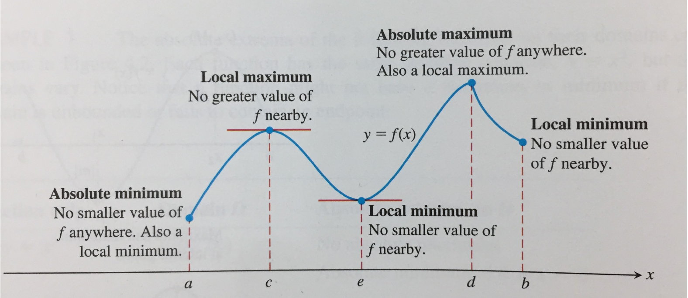
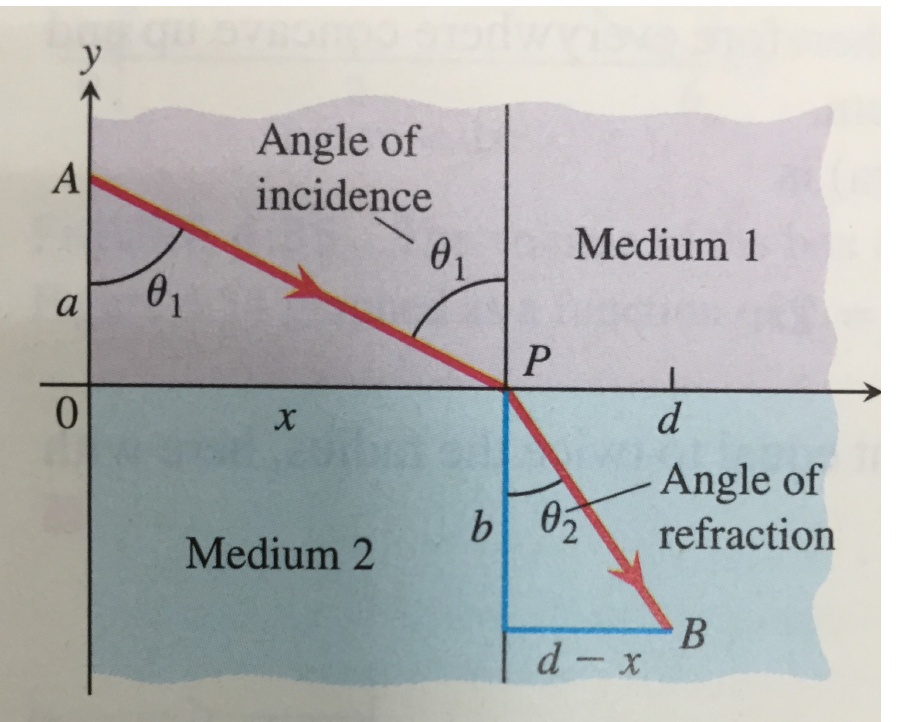
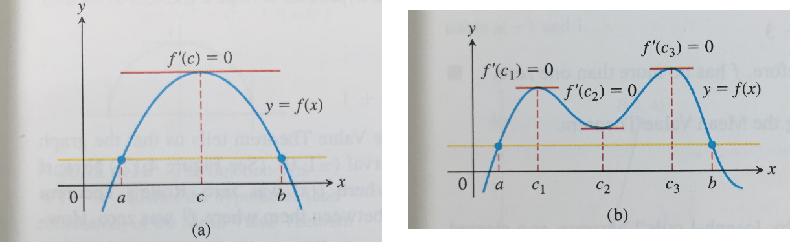

If ∣H−1∣<1 for 0<∣x∣<δ1, use respectively min{δ1,ε/2} and min{δ1,ε/2}.
Also H>1/2 near 0, so f>0 there and
∣x∣f=H,∣H−1∣=H+1∣H−1∣≤∣H−1∣→0.
Limit 1. Use a common radius for H>1/2 and ∣H−1∣<ε. Remember x2=∣x∣.
Quantifiers
Q3(a). Wrong: ∀ε∀δ∃x with both inequalities true. Only asks for one good point. Correct:
∀ε>0∃δ>0∀x∈domf:0<∣x−c∣<δ⟹∣f(x)−L∣<ε.
Counterexample to the wrong definition: f(x)=sin(1/x), c=L=0. Every neighborhood contains x=1/(nπ) with f(x)=0.
Q3(b). Negation for a fixed candidate L:
∃ε0>0∀δ>0∃x∈domf:0<∣x−c∣<δ,∣f(x)−L∣≥ε0.
To show no finite limit, do this for everyL∈R. For sin(1/x) choose ε0=1: if L≤0, use points with sine 1; if L>0, use sine −1. Such points occur arbitrarily close to 0.
Q5(a): uniqueness. If f→A,B and A=B, choose ε=∣A−B∣/3 and a common radius. Then
∣A−B∣≤∣A−f(x)∣+∣f(x)−B∣<2∣A−B∣/3,
contradiction.
Q5(b).f=g for 0<∣x−c∣<r⇒ same limit at c. Use δ=min{r,δf}. The value at c is irrelevant.
Q5(c).f→A⇒∣f∣→∣A∣, since
∣f∣−∣A∣≤∣f−A∣.
Converse holds for all f when A=0. For A=0, take f=∣A∣ to the right of c, f=−∣A∣ to the left.
Density and coupled limits
Q6.D=1 on Q, 0 otherwise; F(x)=xD(x).
At 0: ∣F(x)∣≤∣x∣→0. At x0=0, suppose F→L. Take ε=∣x0∣/4 and δ≤∣x0∣/4 within the limit radius. Density gives rational q and irrational t in that punctured neighborhood. Then
43∣x0∣<∣q∣=∣F(q)−F(t)∣<2ε=21∣x0∣,
contradiction. Limit exists only at 0.
Q7.f<g, f→A, g→B⇒A≤B.
If A>B, use ε=(A−B)/3: near c,
f>A−ε>B+ε>g, impossible. Strictness may disappear: 0<x2 for x=0, both limits 0.
Q8. Assume S=f+g→0, P=fg→0. Key identity:
0≤f2+g2=S2−2P≤∣S∣2+2∣P∣.
Given ε>0, choose a common radius with ∣S∣<ε/2, ∣P∣<ε2/4. Then f2+g2<ε2, so ∣f∣,∣g∣<ε. Both tend to 0.
Do not assume the individual limits exist first. Need both hypotheses: (f,g)=(1,−1) or (0,1) shows what happens if one is dropped.
Substitutions; derivatives at zero
Q9(a).h=x−x0: same radius in
x→x0limf(x)=A⟺h→0limf(x0+h)=A.
Q9(b). If f(x)→A at 0, then f(t2)→A: use ∣t∣<δ. Converse fails: f=1 for x>0, 0 for x<0. Squaring only sees the right side.
Q10.F=xsinxcos(1/x) off 0, F(0)=0:
∣F(h)/h∣=∣sinhcos(1/h)∣≤∣h∣→0;F′(0)=0.
Q11.G=(1+x2−1)/x off 0, G(0)=0:
hG(h)=1+h2+11→21;G′(0)=21.
Q12: fixed point. Continuous f:[0,1]→[0,1]. Set H=f−x:
H(0)≥0,H(1)≤0IVTH(c)=0 for some c∈[0,1].
If f is strictly decreasing, two fixed points c1<c2 would give c1=f(c1)>f(c2)=c2. Unique. Without this, f(x)=x fixes everything.
Q13. For f>0 on a punctured neighborhood,
f→+∞⟺1/f→0.
Forward: use threshold M=1/ε. Reverse: use error ε=1/M, giving 0<1/f<1/M⇒f>M. Positivity matters: f=−(x−c)−2 has 1/f→0 but f→−∞.
C1 reminder.f′′ exists ⇒f∈C1 (f′ continuous) ⇒f differentiable ⇒f continuous, on an open interval. Converses fail at 0, respectively: x∣x∣, x2sin(1/x) extended by 0, ∣x∣.
Lecture 11
Extreme values
Definition. Absolute maximum at c∈D: f(x)≤f(c) for all x∈D. Minimum: reverse inequality. Supremum need not be attained.
Ex.1.2.22.
x on (0,1): neither extremum. arctanx on R: neither; bounds ±π/2 not attained.
f=∣x∣ for 0<∣x∣<1, f(0)=f(±1)=1/2: on [−1,1], inf 0, sup 1, neither attained.
u(p/q)=1/q, reduced, q>0: max 1, no minimum. Giving irrationals value 1 on [0,1] still gives max 1, no minimum.
Theorem 1.2.4 (EVT). Continuous on [a,b]⇒ attains both absolute extrema. Need continuity + closed + bounded.
Proof sketch. Unbounded f would give ∣f(xn)∣>n. A subsequence xnj→c∈[a,b] contradicts continuity. Thus M=supf is finite. Choose
M−1/n<f(xn)≤M.
Take a convergent subsequence again: f(c)=M. Apply to −f for the minimum. Uses the bounded-sequence subsequence theorem.
Definition. Local maximum at c∈D: for some δ>0,
f(x)≤f(c)(x∈D∩(c−δ,c+δ)).
Strict: < for x=c. Endpoints count relative to D.

Lecture 11, p.17.
Theorem 1.2.5 (Fermat). Interior local extremum + differentiable ⇒f′(c)=0.
At a local maximum,
h>0:hf(c+h)−f(c)≤0,h<0:hf(c+h)−f(c)≥0.
Same limit ⇒f′(c)=0. Minimum: apply to −f.
Critical point: interior point with f′=0 or f′ undefined. Only a candidate:
x3 at 0 has no extremum; ∣x∣ has a minimum but no derivative. Endpoints checked separately (x on [0,1]).
Refraction
Ex.1.2.27.A=(0,a), B=(d,−b), crossing point P=(x,0); a,b,d,c1,c2>0.

Lecture 11, p.37. Angles from the normal.
Minimize time, not length:
T(x)=c1a2+x2+c2b2+(d−x)2,0≤x≤d.
T′(0)<0<T′(d), so the EVT minimum is interior. Fermat gives
Theorem 1.2.6 (Rolle).f∈C[a,b], differentiable on (a,b), f(a)=f(b)⇒∃c∈(a,b) with f′(c)=0.
Proof: constant case immediate. Otherwise an absolute max or min differs from the endpoint value, hence lies inside. EVT + Fermat.

Lecture 11, p.43. At least one, not necessarily one.
No endpoint derivatives required. Interior differentiability matters: ∣x∣ on [−1,1] is a counterexample without it.
Theorem 1.2.7 (MVT).f∈C[a,b], differentiable on (a,b):
∃c∈(a,b):f(b)−f(a)=f′(c)(b−a).
Subtract the secant: h(x)=f(x)−f(a)−b−af(b)−f(a)(x−a). Then h(a)=h(b)=0; Rolle gives the result.
Corollary 1.2.8.f′=0 on an interval ⇒f constant. Apply MVT between any two points. Disconnected domains may have different constants on different pieces.
Ex.1.2.29.F=x100−x−1: F(1)=−1 and
F(1+t)>99t−1(t>0)⟹F(100/99)>0.
IVT gives a root in (1,100/99); F′=100x99−1>0 there gives uniqueness by Rolle.
Ex.1.2.31.F=x2−sinx: root 0, and another in (π/6,1) since F(π/6)<0<F(1). Three roots would give two zeros of F′ and one of F′′, but F′′=2+sinx≥1. Exactly two roots.
Ex.1.2.32. If f′′ is continuous on [a−δ,a+δ], set M=max∣f′′∣. MVT twice, for 0<∣h∣<δ:
Δy−dy=[f′(ξ)−f′(a)]h=f′′(η)(ξ−a)h⟹∣Δy−dy∣≤M∣h∣2.
ξ,η lie between a and a+h.
Ex.1.2.33.f∈C[a,b], differentiable inside; f′(x)→L∈R as x→a+. Then
Strict minimum at 0, but no monotone neighborhood on either side. At 1/(2nπ), f′<0 eventually; at 1/((2n+1)π), f′>0. Negative sequences give both signs too. The first-test sign pattern is sufficient, not necessary.
Ex.1.2.24 revisited.f=(x−1)x2/3:
f′=3x1/35x−2,xf′(−∞,0)+(0,2/5)−(2/5,∞)+
Local max at 0; local min at 2/5, value −53(2/5)2/3 (correcting the slide typo).
Ex.1.2.37.f=∣2x3−9x2+12x∣ on [−1/4,5/2]. Since 2x2−9x+12>0, split at 0:
f′={−6(x−1)(x−2),6(x−1)(x−2),x<0,x>0.
Candidates 0,1,2 + endpoints:
xf(x)−1/4115/320015245/25
Motion: down/up/down/up. Global min 0 at 0; max 5 at 1,5/2. Local min at 2; relative-domain local max at −1/4.
Convexity
Definition. On an interval I, convex means
f(αx+(1−α)y)≤αf(x)+(1−α)f(y)(x,y∈I,0<α<1).
Strict: < for x=y. Concave: reverse inequality. No derivative assumed.
For x2, the left side minus the right side is −α(1−α)(x−y)2<0 when x=y.
Ex.1.2.41 (Three-point criterion). Convexity is equivalent to
v−uf(v)−f(u)≤w−vf(w)−f(v)(u<v<w).
Proof: write v=αu+(1−α)w, α=(w−v)/(w−u), and rearrange the chord inequality. Strict version uses <.
Ex.1.2.42, 42'. For differentiable f on an open interval,
f convex⟺f′ nondecreasing,f strictly convex⟺f′ strictly increasing.
Reverse direction: MVT on [u,v], [v,w] turns the two slopes into f′(ξ1),f′(ξ2) with ξ1<ξ2.
Forward, strict case: fix u<z<v and shrink exterior secants:
f′(u)≤z−uf(z)−f(u)<v−zf(v)−f(z)≤f′(v).
Keep the middle strict inequality; limits alone may lose strictness. Non-strict case: replace < by ≤.
Proposition 1.2.11. For twice-differentiable f, f′′≥0⇒ convex. If f′′≥0 with f′′>0 except at finitely many points, then strictly convex. Reverse signs for concavity.
Proof: MVT makes f′ nondecreasing; in the second case it strictly increases on a subinterval between any two points. Apply Ex.1.2.42.
Another proof idea: add εx2, obtain strict convexity, then let ε↓0 in the chord inequality.
Ex.1.2.43-44.
x2n on R and xn on (0,∞) (n>1): strictly convex. Also 1/x on (0,∞); sinx strictly concave on [0,π].
x4/3: f′=34x1/3 strictly increasing even across 0. Strictly convex, though f′′(0) undefined.
x5/3: f′=35x2/3 decreases left of 0, increases right. Concave down / up.